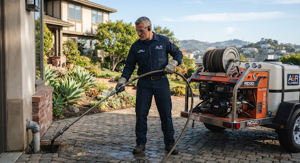
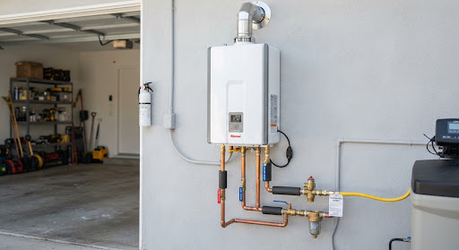

Bay Area Master Plumber Insights • Armin's Field Notes
Plumbing & Drain Care Insights
Straightforward, professional guidance from licensed Master Plumber Armin. Proven diagnostic tips, trenchless sewer insights, and preventative maintenance for Bay Area homeowners.

Featured Deep-Dive
schedule 7 min read
calendar_today Oct 28, 2024
•verified_user By Armin (Master Plumber)
5 Signs Your Bay Area Main Sewer Line Needs Hydro-Jetting (And How to Avoid Backups)
From mature Eucalyptus roots along Oakland hills to chronic grease collection in Berkeley kitchens, regular snaking only punches temporary holes. Discover how commercial-grade 4,000 PSI hydro-jetting cleans lines to bare pipe and spares your floors from catastrophic backups.
Updated weekly with preventative maintenance checklists, code updates, and troubleshooting tips.

Water Heaters
event Oct 25, 2024•schedule 5 min
Tankless vs Traditional Water Heaters: Which Saves More Energy in California Homes?
A licensed plumber's breakdown of natural gas and electric heat pump systems, upfront conversion costs, Title 24 California energy code compliance, and payback periods for Bay Area family homes.
What to Do in a Plumbing Emergency Before Master Plumber Armin Arrives
Minutes count when a pressurized pipe ruptures. Follow these 4 immediate steps to isolate water zones, cut electric breakers near water pooling, and protect hardwood subflooring.
Tree Roots in Your Sewer Lateral: Trenchless Repair Options Explained
Why destroy your prized driveway or custom brick walkway? Compare pipe bursting vs CIPP epoxy relining to permanently stop root intrusion without standard open-trench excavation.
event Oct 08, 2024•schedule 5 min•Regional Focus: East & South Bay
Hard Water Issues in Alameda and Santa Clara: Protecting Your Plumbing Fixtures
Municipal water supplies across Alameda and Santa Clara County frequently test high in calcium and magnesium. Learn how mineral calcification quietly chokes tankless heating coils, drops shower water pressure, and what water filtration or softening systems actually solve it.
Evaluate whether your drain issue is a quick clearing or requires high-pressure jetting.
Slow bathroom sinkSnaking
Multiple fixtures gurglingMain Camera Check
Water surfacing in yardImmediate Hydro-Jet
faucet 24/7 Rapid Response Unit
Need Fast Plumbing Help? We're Ready 24/7!
Don't let a backed-up sewer line or ruptured water heater ruin your home. Master Plumber Armin and our dispatch team arrive equipped with industrial diagnostic machinery.
5 Signs Your Bay Area Main Sewer Line Needs Hydro-Jetting
Your main sewer line carries every drop of wastewater out of the house, so when it starts to fail the warning signs show up in more than one place. Catching them early is the difference between a scheduled cleaning and an emergency backup.
1. Several drains are slow at once. One slow sink is usually a local clog. Slow tubs, showers and toilets together point to the main line.
2. Gurgling toilets. Bubbling or gurgling when you run the washer or a shower means air is being forced back up past a blockage.
3. Water backing up into the lowest drain. Sewage or dirty water rising in a floor drain or basement shower is a clear sign the main line is restricted.
4. Sewer smells in the yard or house. Persistent odors can mean a cracked pipe or a partial blockage letting gases escape.
5. Unusually green or soggy patches of lawn. A leaking sewer lateral feeds the grass above it.
Snaking punches a hole through a clog, but roots and grease grow back. Hydro-jetting uses high-pressure water to scour the pipe walls clean. A camera inspection first shows whether the pipe is healthy enough to jet or needs repair. If you notice two or more of these signs, call Armin before it becomes a backup.
Tankless vs Traditional Water Heaters: Which Saves More in California Homes?
A traditional tank heater keeps 40–50 gallons hot around the clock. It costs less to buy and install, and replacing like-for-like is usually a same-day job.
A tankless heater heats water only when you open a tap. It takes up far less space, never runs out of hot water, and typically lasts longer than a tank — but installation costs more, especially if the gas line or venting needs upgrading.
Electric heat pump water heaters are a third option that California increasingly encourages. They are very efficient and may qualify for local utility rebates.
Which is right for you? If your household uses a lot of hot water and you plan to stay in the home for years, tankless or heat pump usually pays off. If your tank simply failed and you need hot water today, a new tank is often the practical choice.
Signs it's time to replace: the tank is over 10 years old, there's rust-colored water, popping or rumbling noises, or water pooling at the base. Armin can walk you through real installed costs for your home.
How to Safely Clear a Clogged Drain Without Harsh Chemicals
Store-bought chemical drain openers generate heat and caustic reactions that can soften PVC pipe joints and eat away at older cast-iron and galvanized pipes. They also make the job dangerous for anyone who has to open the line later.
Try these first:
1. Boiling water (metal pipes only) for soap and grease clogs in kitchen sinks.
2. A plunger — use a cup plunger for sinks and a flange plunger for toilets. Cover the overflow hole on bathroom sinks for better suction.
3. Baking soda and vinegar — half a cup of each, wait 15 minutes, then flush with hot water. It's gentle and works on light buildup.
4. A hand drain snake or zip tool to pull out hair clogs from tubs and bathroom sinks.
5. Enzyme drain cleaners for regular maintenance — they digest organic buildup slowly without harming pipes.
If the clog keeps coming back, affects more than one fixture, or water backs up into another drain, the problem is deeper in the line. That's the time to call a professional.
What to Do in a Plumbing Emergency Before Armin Arrives
When a pipe bursts or a toilet overflows, the first few minutes matter most. Follow these steps while help is on the way:
1. Shut off the water. For one fixture, turn the small valve under the sink or behind the toilet clockwise. For a burst pipe, close the main shutoff — usually near the front of the house, in the garage, or where the water line enters.
2. Turn off power near the water. If water is close to outlets, appliances or the electrical panel, switch off those breakers. Never stand in water to reach a panel.
3. Turn off the water heater if the main water is off for a while — set gas units to "pilot" or switch off the breaker for electric units.
4. Protect floors and belongings. Mop up standing water, move rugs and furniture, and take photos for insurance.
Then call Armin at (510) 609-2804. We're available 24/7 for emergencies across the Bay Area.
Tree Roots in Your Sewer Lateral: Trenchless Repair Options Explained
Tree roots seek out moisture, and older clay and cast-iron sewer laterals have joints and cracks that let them in. Once inside, roots grow into a net that catches paper and grease until the line backs up.
Clearing roots: Hydro-jetting cuts roots out and cleans the pipe, but if the pipe is cracked, roots will return.
Trenchless repair options:
Pipe lining (CIPP): a resin-soaked liner is pulled into the old pipe and cured in place, creating a new seamless pipe inside the old one. Roots can't get through joints that no longer exist.
Pipe bursting: a new pipe is pulled through the old line while a bursting head breaks the old pipe apart. Good for pipes that are too damaged to line.
Both methods usually need only small access pits instead of trenching across your yard or driveway. A camera inspection tells us which option fits your pipe.
Hard Water in Alameda and Santa Clara: Protecting Your Plumbing Fixtures
Parts of the East Bay and South Bay have moderately hard water — water carrying dissolved calcium and magnesium. Over time those minerals leave scale on everything they touch.
Signs of hard water: white crust on faucets and showerheads, spotty dishes, dropping shower pressure, and popping noises from the water heater.
What it does to your plumbing: scale narrows pipes and aerators, coats water heater elements and tankless heat exchangers, and shortens the life of faucets and appliances.
Simple fixes: soak aerators and showerheads in vinegar, flush your water heater once a year, and descale tankless units per the manufacturer's schedule.
Long-term solutions: a water softener or scale-reduction system protects the whole house. Armin can test your water and recommend whether it's worth it for your home.